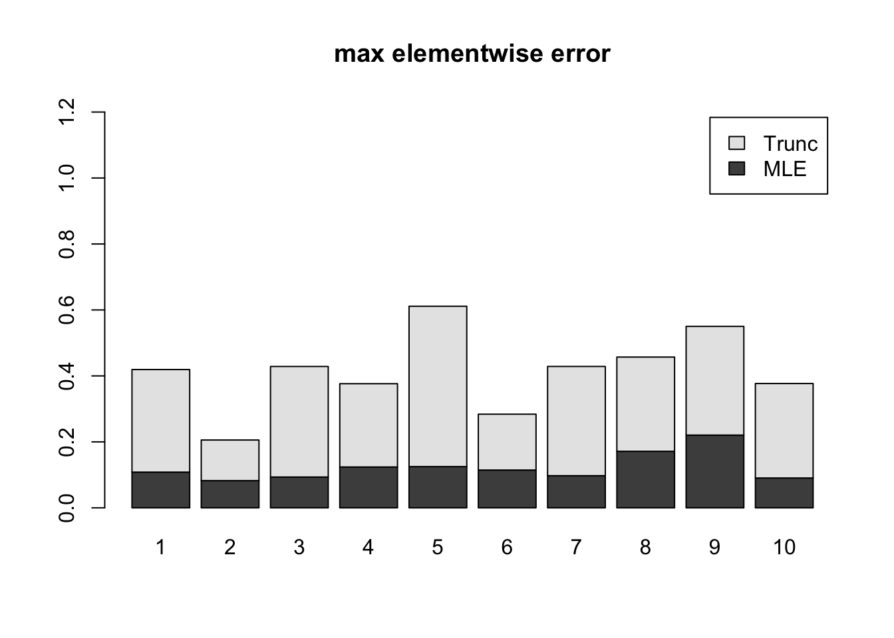
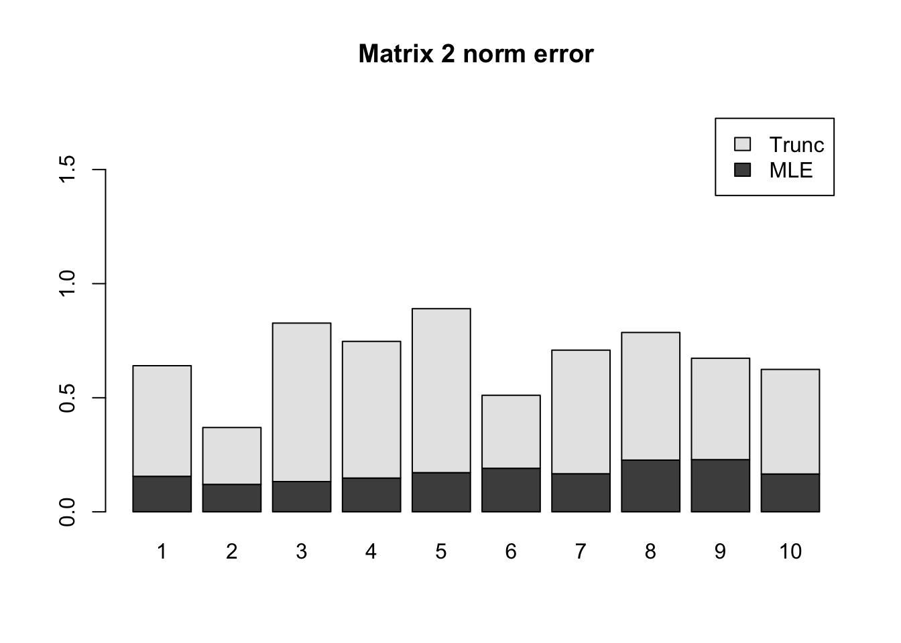

Last updated: 2018-08-03
library(mashr)Loading required package: ashrsource('../code/generateDataV.R')
source('../code/estimate_cor.R')
library(knitr)
library(kableExtra)\[ \hat{\beta}|\beta \sim N_{3}(\hat{\beta}; \beta, \left(\begin{matrix} 1 & 0.7 & 0.1 \\ 0.7 & 1 & 0.5 \\ 0.1 & 0.5 & 1 \end{matrix}\right)) \]
\[ \beta \sim \frac{1}{4}\delta_{0} + \frac{1}{4}N_{3}(0, \left(\begin{matrix} 1 & 0 &0\\ 0 & 0 & 0 \\ 0 & 0 & 0 \end{matrix}\right)) + \frac{1}{4}N_{3}(0, \left(\begin{matrix} 1 & 0 & 0 \\ 0 & 1 & 0 \\ 0 & 0 & 0 \end{matrix}\right)) + \frac{1}{4}N_{3}(0, \left(\begin{matrix} 1 & 1 & 1 \\ 1 & 1 & 1 \\ 1 & 1 & 1 \end{matrix}\right)) \]
set.seed(1)
Sigma = cbind(c(1,0.7,0.1), c(0.7,1,0.5), c(0.1,0.5,1))
U0 = matrix(0,3,3)
U1 = matrix(0,3,3); U1[1,1] = 1
U2 = diag(3); U2[3,3] = 0
U3 = matrix(1,3,3)
data = generate_data(n=500, p=3, V=Sigma, Utrue = list(U0=U0, U1=U1,U2=U2,U3=U3))m.data = mash_set_data(data$Bhat, data$Shat)
m.1by1 = mash_1by1(m.data)
strong = get_significant_results(m.1by1)
U.pca = cov_pca(m.data, 3, subset = strong)
U.ed = cov_ed(m.data, U.pca, subset = strong)
U.c = cov_canonical(m.data)We run the algorithm in estimate cor mle with 3 different initial points for \(\rho\). The estimated correlation is
Vhat.max = estimateV(m.data, c(U.c, U.ed), init_rho = c(-0.5,0,0.5), tol=1e-3)
Vhat.max$V [,1] [,2] [,3]
[1,] 1.0000000 0.7131869 0.1343278
[2,] 0.7131869 1.0000000 0.5022083
[3,] 0.1343278 0.5022083 1.0000000The running time for each pairwise correlation is
table = data.frame(t(Vhat.max$ttime))
colnames(table) = c('12','13','23')
table %>% kable() %>% kable_styling()| 12 | 13 | 23 |
|---|---|---|
| 110.395 | 56.69 | 26.003 |
The time is the total running time with different initial point.
Using the original truncated correlation:
Vhat.tru = estimate_null_correlation(m.data)
Vhat.tru [,1] [,2] [,3]
[1,] 1.00000000 0.4621643 0.07423134
[2,] 0.46216433 1.0000000 0.41652572
[3,] 0.07423134 0.4165257 1.00000000Checking the estiamted error:
maxError = c(max(abs(Vhat.max$V - Sigma)),
max(abs(Vhat.tru - Sigma)))
OpError = c(svd(Vhat.max$V - Sigma)$d[1],
svd(Vhat.tru - Sigma)$d[1])
table = data.frame(maxError = maxError, OpError = OpError, row.names = c('mle','trunc'))
table %>% kable() %>% kable_styling()| maxError | OpError | |
|---|---|---|
| mle | 0.0343278 | 0.0375554 |
| trunc | 0.2378357 | 0.2609944 |
In mash model, the model with correlation from mle has larger loglikelihood.
m.data.mle = mash_set_data(data$Bhat, data$Shat, V=Vhat.max$V)
m.model.mle = mash(m.data.mle, c(U.c,U.ed), verbose = FALSE)m.data.trunc = mash_set_data(data$Bhat, data$Shat, V=Vhat.tru)
m.model.trunc = mash(m.data.trunc, c(U.c,U.ed), verbose = FALSE)table = data.frame(log_likelihood = c(get_loglik(m.model.mle), get_loglik(m.model.trunc)), row.names = c('mle', 'trunc'))
t(table) %>% kable() %>% kable_styling()| mle | trunc | |
|---|---|---|
| log_likelihood | -8905.915 | -8942.591 |
I randomly generate 10 positive definite correlation matrices, V. The sample size is 2000.
\[ \hat{z}|z \sim N_{5}(z, V) \] \[ z\sim\frac{1}{4}\delta_{0} + \frac{1}{4}N_{5}(0,\left(\begin{matrix} 1 & \mathbf{0}_{1\times 4} \\ \mathbf{0}_{4\times 1} & \mathbf{0}_{4\times 4} \end{matrix}\right)) + \frac{1}{4}N_{5}(0,\left(\begin{matrix} \mathbf{1}_{2\times 2} & \mathbf{0}_{1\times 3} \\ \mathbf{0}_{3\times 1} & \mathbf{0}_{3\times 3} \end{matrix}\right)) + \frac{1}{4}N_{5}(0,\mathbf{1}_{5\times 5}) \]
library(mashr)
n=500; p = 5
U0 = matrix(0,p,p)
U1 = U0; U1[1,1] = 1
U2 = U0; U2[c(1:2), c(1:2)] = 1
U3 = matrix(1, p,p)
Utrue = list(U0 = U0, U1 = U1, U2 = U2, U3 = U3)
result = V.simulation(n,p,10,Utrue)
saveRDS(result, '../output/MASH.10.mle.result.rds')result = readRDS('../output/MASH.10.mle.result.rds')The max elementwise norm is
temp = rbind(result$mMaxE.max, result$mMaxE.trun)
barplot(temp, axes=T,
main="max elementwise error",
names.arg = 1:10,
legend.text = c("MLE", "Trunc"),
ylim = c(0, max(colSums(temp))*2))
The spectral norm is
temp = rbind(result$m2E.max, result$m2E.trun)
barplot(temp, axes=T,
main="Matrix 2 norm error",
names.arg = 1:10,
legend.text = c("MLE", "Trunc"),
ylim = c(0, max(colSums(temp))*2))
The 10 estimated correlation matrices are all positive definite.
The total running time for each matrix is
t(result$Time) %>% kable() %>% kable_styling()| 777.223 | 1078.659 | 651.365 | 745.071 | 1064.722 | 893.494 | 924.456 | 697.97 | 741.843 | 716.978 |
sessionInfo()R version 3.5.1 (2018-07-02)
Platform: x86_64-apple-darwin15.6.0 (64-bit)
Running under: macOS High Sierra 10.13.6
Matrix products: default
BLAS: /Library/Frameworks/R.framework/Versions/3.5/Resources/lib/libRblas.0.dylib
LAPACK: /Library/Frameworks/R.framework/Versions/3.5/Resources/lib/libRlapack.dylib
locale:
[1] en_US.UTF-8/en_US.UTF-8/en_US.UTF-8/C/en_US.UTF-8/en_US.UTF-8
attached base packages:
[1] stats graphics grDevices utils datasets methods base
other attached packages:
[1] kableExtra_0.9.0 knitr_1.20 mashr_0.2-9 ashr_2.2-10
loaded via a namespace (and not attached):
[1] Rcpp_0.12.18 highr_0.7
[3] compiler_3.5.1 pillar_1.3.0
[5] plyr_1.8.4 iterators_1.0.10
[7] tools_3.5.1 digest_0.6.15
[9] viridisLite_0.3.0 evaluate_0.11
[11] tibble_1.4.2 lattice_0.20-35
[13] pkgconfig_2.0.1 rlang_0.2.1
[15] Matrix_1.2-14 foreach_1.4.4
[17] rstudioapi_0.7 yaml_2.2.0
[19] parallel_3.5.1 mvtnorm_1.0-8
[21] xml2_1.2.0 httr_1.3.1
[23] stringr_1.3.1 REBayes_1.3
[25] hms_0.4.2 rprojroot_1.3-2
[27] grid_3.5.1 R6_2.2.2
[29] rmarkdown_1.10 rmeta_3.0
[31] readr_1.1.1 magrittr_1.5
[33] scales_0.5.0 backports_1.1.2
[35] codetools_0.2-15 htmltools_0.3.6
[37] MASS_7.3-50 rvest_0.3.2
[39] assertthat_0.2.0 colorspace_1.3-2
[41] stringi_1.2.4 Rmosek_8.0.69
[43] munsell_0.5.0 pscl_1.5.2
[45] doParallel_1.0.11 truncnorm_1.0-8
[47] SQUAREM_2017.10-1 ExtremeDeconvolution_1.3
[49] crayon_1.3.4 This R Markdown site was created with workflowr